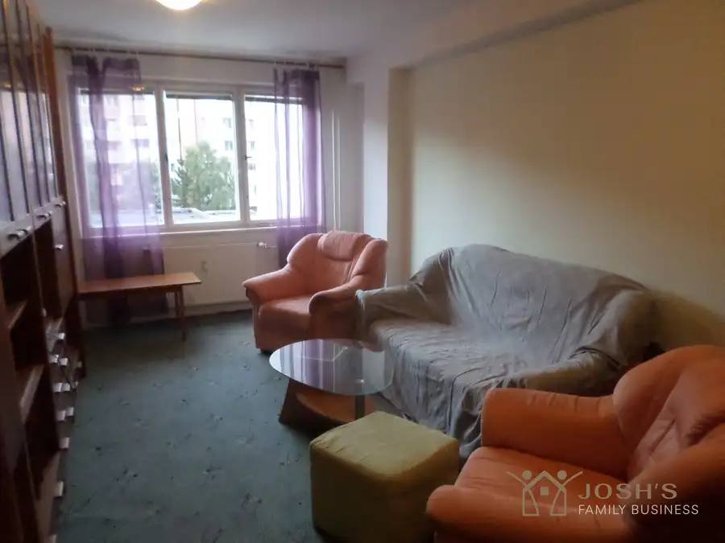
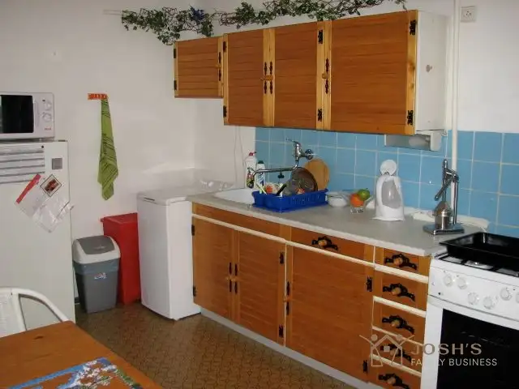
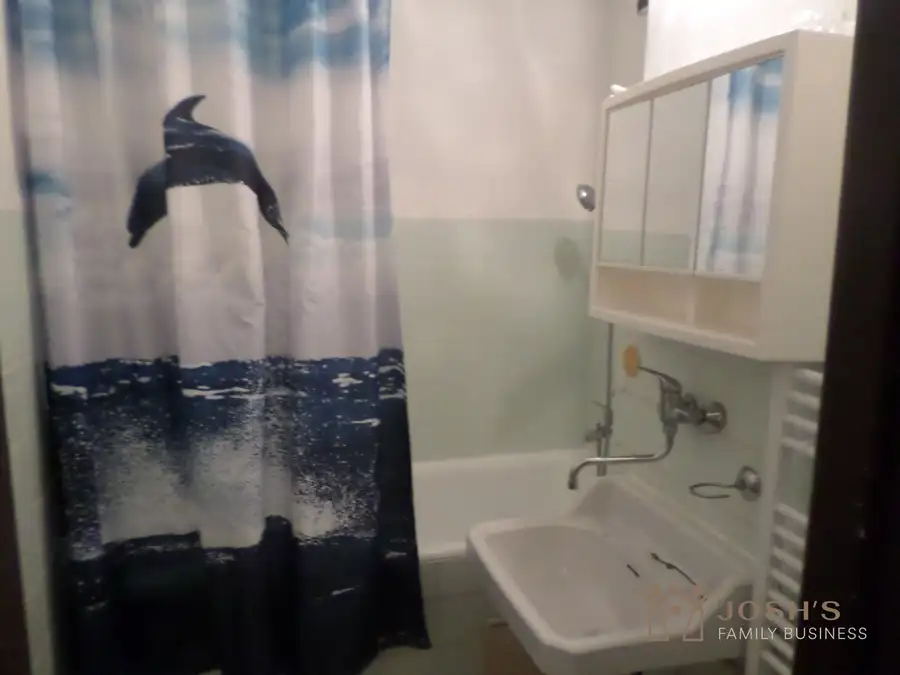

Veľký dvojizbový byt na prenájom, 750e/mes komplet s energiami, Karpatské námestie, Rača
Rača, Bratislava



- Dispozícia2-izbový
- Plocha61 m²
- Poschodie2. z 6
- StavPôvodný stav
O nehnuteľnosti
Ponúkame na prenájom útulný, zariadený 2-izbový byt nachádzajúci sa v obľúbenej a vyhľadávanej časti Rače. Byt je ideálny pre jednotlivca alebo pár, ktorí hľadajú bývanie v kvalitnej lokalite s kompletnou občianskou vybavenosťou. POPIS BYTU•výmera bytu : 61 m²•balkón – zasklený posuvným systémom•2./6. poschodie DISPOZÍCIA:•dve nepriechodné izby•praktické a funkčné riešenie priestoruZHRNUTIE:Ideálna voľba pre záujemcov, ktorí hľadajú:•lacné bývanie•zariadený byt•balkón •kvalitnú a pokojnú lokalitu s výbornou dostupnosťouDOPLŇUJÚCE INFORMÁCIE:•preferujeme zodpovedného a spoľahlivého nájomcu•požadujeme starostlivý prístup k bytu•domáce zviera (psík menšieho vzrastu) povolené •dlhodobý nájom vítanýCENA PRENÁJMU:•mesačné nájomné a energie spolu: 750 € / mesiac•vratná kaucia: 500 € •sprostredkovateľský poplatok RK: vo výške jednomesačného nájmu-500 € Neváhajte nás kontaktovať a dohodnite si obhliadku.Byt je voľný od októbra 2026 a pripravený stať sa vaším novým domovom.S majiteľom hľadáme jedného alebo dvoch pracujúcich ľudí (max jedno školopovinné dieťa). Zvieratá skôr nie, max mačka, alebo zvieratko v klietke v akváriu, nie pes.Pre obhliadky volajte alebo píšte whatsapp, mail:Jarolím Achbergerachberger@jfb.sk+421 902 670 863JFB reality
Parametre
- Cena vrátane energií
- Áno
- Druh
- 2 izbový byt
- Dátum zverejnenia
- 16. 09. 2025
- Energetický certifikát budovy
- V príprave
- Orientácia
- Juhovýchodná
- Podlažie
- 2
- Počet balkónov
- 1
- Počet nadzemných podlaží
- 6
- Rok výstavby
- 1973
- Stav nehnuteľnosti
- Pôvodný stav
- Typ
- Prenájom
- Typ konštrukcie
- Tehlová
- Vybavenie
- Balkón, Verejné parkovanie
- Úžitková plocha
- 61 m²